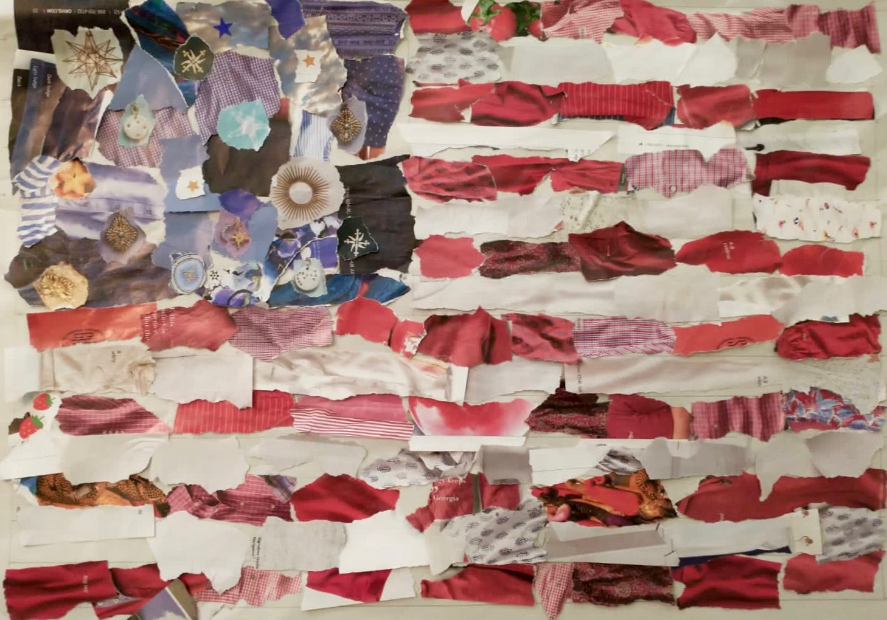
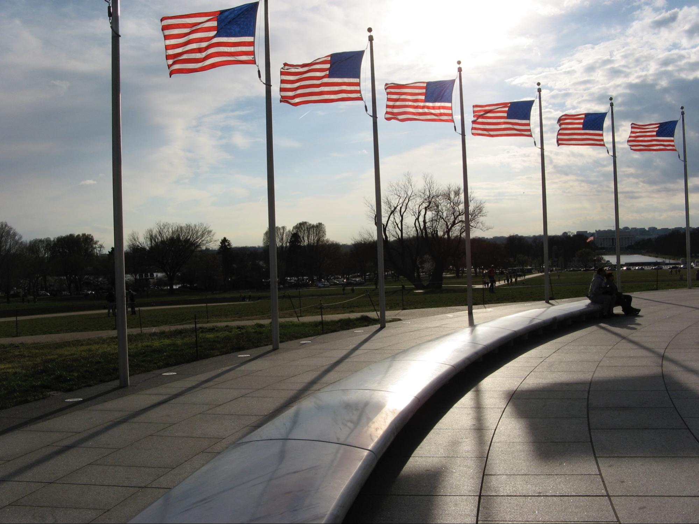
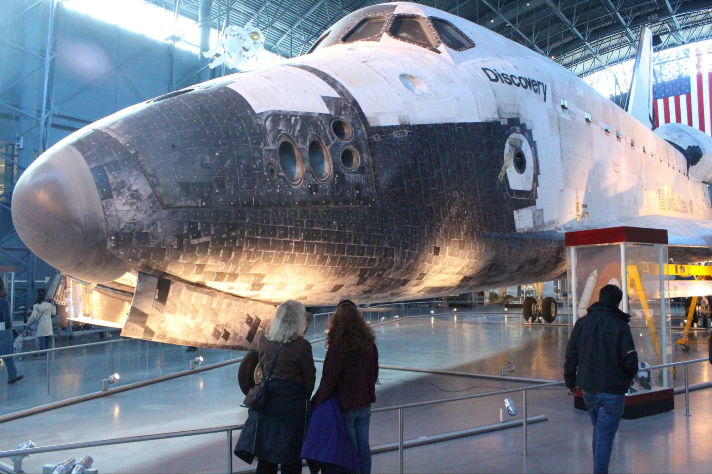
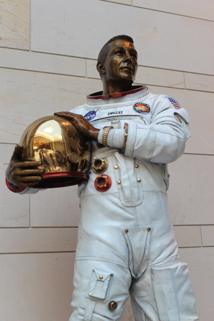
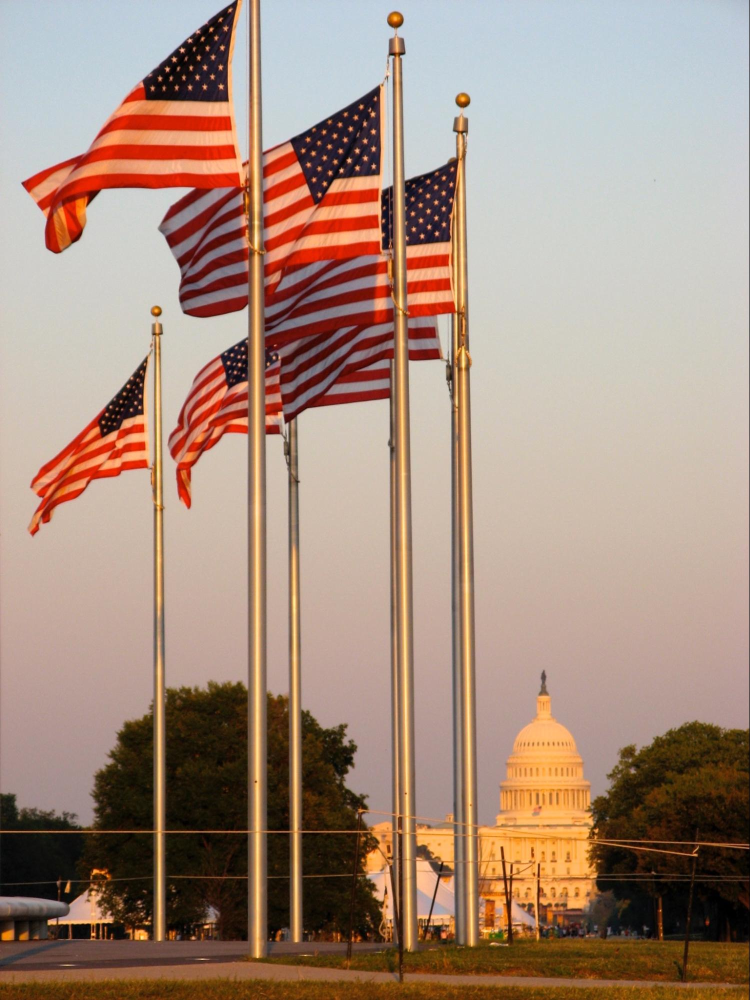
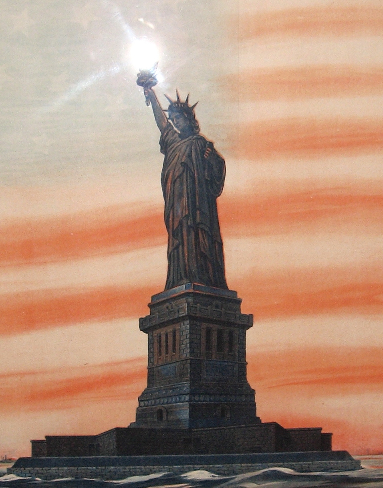

The American flag is the most important symbol of our country. When children see the flag it should remind them not only of how exceptional our country is but also of the men and women who fought for our freedoms. This story is about the most famous flag in our history and how it inspired our national anthem, whose soaring lyrics serve to remind us and connect us to our heritage: “the land of the free and the home of the brave.”
Underlying the patriotic story of our flag is the empowering story of Caroline and her mother, Mary. At a time when it was rare for women to operate a business, these entrepreneurs successfully launched their Flags and Ensigns enterprise, sewing and selling flags to military and civilian customers. Teaching other young women how to support themselves as seamstresses, these women exemplified our free enterprise traditions, our work ethic, our encouragement of one another, equal opportunity for all, and the self-reliance at the foundation of our country.
The War of 1812 is also called the Second War for Independence. Once again, we are fighting the British, this time because British warships were capturing American sailors and forcing them to fight in the Napoleonic Wars against the French. Once again, we are fighting for “Life, Liberty, and the Pursuit of Happiness.”

Title: Long May She Wave: The True Story of Caroline Pickersgill and Her Star-Spangled Creation
Author: Kristen Fulton
Illustrator: Holly Berry
Year Published: 2017
Length: 40 pages
Below is one suggestion for your week with the book Long May She Wave. Please experiment with what works for your family! (Note: not all activities are included in the suggested sample week below).
time: 3 minutes
freq: daily
O say can you see, by the dawn’s early light What so proudly we hail’d at the twilight’s last gleaming, Whose broad stripes and bright stars through the perilous fight, O’er the ramparts we watch’d, were so gallantly streaming?
This is a great opportunity to teach your child(ren) our National Anthem, The Star-Spangled Banner. You might want to find a YouTube video of the song so they can sing along with it (here are a couple of different versions - mixing it up each day will keep them interested). If you are musically inclined, you can play it for them on your preferred instrument. By the end of the week, the older children should be able to sing the first verse all the way through.
Lawyer and amateur poet Francis Scott Key wrote the lyrics to The Star-Spangled Banner after witnessing the defence of Fort McHenry. His brother-in-law adapted the melody from an old British drinking song. It wasn’t until 1931 that Congress approved it as our National Anthem in a somewhat controversial vote. Other strong contenders for our national anthem included, My Country ‘Tis of Thee and America the Beautiful.
time: 30-60 minutes
prep: 10-15 minutes
supplies: Construction paper, magazines, glue, ruler, pen
Roll, push. She worked alongside her mother and grandmother. But this flag was so large that all of the seamstresses in the house were called to help.
Many women worked together as a team over an extended period of time to create the enormous flag that flew over Fort McHenry. In this activity you can replicate that teamwork and time by creating a collage flag with multiple members of the family over a period of 2-3 days. This activity is adapted from the meaningful mama website.
Our flag was large enough that my kids and I worked as a team to complete it. We made it over the course of three days (taking breaks as the kids lost interest). My three-year-old daughter enjoys ripping paper and glue sticks so this seemed like her kind of activity. She also seemed to enjoy pretending to be Caroline and “designing” the flag by shaping the scraps of paper. We snuck in some practice counting as the kids counted the stripes and then counted the completed stripes to get a sense of our progress.

time: 20-30 minutes
prep: 5-10 minutes
supplies: Construction paper, scissors, string
Press, lift. Caroline’s grandmother ironed fifteen stars, each more than two feet wide.
Make a five-pointed star two-feet wide to get an idea of the size of the flag (if you want to get the angles right, you can use a string to draw a circle with radius 12-5/8 inches, then use a slightly longer string to mark off the five points around the circle, each 14-7/8 inches apart). If you are ambitious, work with your child(ren) to make five of them. Then, set them on the ground to give them some idea of the size of Fort McHenry’s flag and why the Pickersgill family needed so many people and so much room to make it.
For even more fun, we measured out the flag in our backyard, and that is worth doing if you have the space! It is a good chance to practice using a measuring tape and rope. We put stakes in the corners and wrapped rope around them to see the full picture. We were all astonished at how big it was! We put our two-foot star in it too.
You can also try making a six-pointed star and see which “fits” better.
time: 10 minutes
supplies: U.S. Puzzle
After she stitched the last stitch, Caroline watched American soldiers raise her flag up the flagpole at Fort McHenry.
By the time of the War of 1812 our country had grown and we had added a handful of new states. The original flag of the United States of America had 13 stars and 13 stripes representing the thirteen original states. How many stars are on the Flag during the War of 1812? (15) What new states were added after the War of Independence? Vermont, Kentucky, Tennessee, Ohio, Louisiana. Why were there only 15 stars if there were 18 states? (Congress authorizes new flags. They authorized the 15 star version of the flag in 1794, after Vermont and Kentucky were admitted to the Union). How many stripes did the flag have at that time? (15) How many do we have today? (13) What do they symbolize? (The original 13 colonies). The 1794 version of our flag was the only one where additional stripes were added to match the number of states. In 1818, Congress authorized a new version of the flag with 20 stars and 13 stripes.
Show how our country grew from the founding in 1776 to the time of the story in 1814. Use a puzzle of the United States and start with having your child(ren) place the pieces representing the original 13 colonies (or use a map where they can color in the states with crayons or markers). Then, fit the pieces of the five new states into the puzzle (or color them in, using a different color).
time: 5 minutes
freq: daily
What better module to introduce your child(ren) to The Pledge of Allegiance? According to the United States Flag Code, the pledge should be recited by standing and facing the flag while placing your right hand over your heart:
I pledge allegiance to the Flag of the United States of America, and to the Republic for which it stands, one Nation, under God, indivisible, with liberty and justice for all.
The original Pledge of Allegiance was written in 1892 by Francis Bellamy to celebrate the 400th anniversary of Christopher Columbus’ arrival in America. Bellamy, a Baptist minister, published it in Youth’s Companion, a popular national magazine. The publisher and editors of Youth’s Companion believed that part of their mission was to promote national pride and the egalitarian ideals at the heart of American exceptionalism. They were also responsible for an earlier campaign that made flying the American flag part of every public school.
Bellamy’s original version was tweaked over the years, first by Bellamy, then the National Flag Conference (in 1923 and 1924) and finally by Congress. Congress officially adopted the Pledge in 1942; in 1954, Congress made the fourth and (so far) final change, adding the words “under God.”
The pledge includes some words that are probably new to youngsters. See the Vocabulary section below for some definitions. The Pledge of Allegiance is a standard part of our naturalization ceremony, where people born in other countries declare their intention to become American citizens. Have your child(ren) practice reciting the pledge after each reading of Long May She Wave.
time: 20-30 minutes
prep: 10-15 minutes
But Caroline stayed. The flag that she sewed was more than red, white, and blue. It was a symbol of this new nation, the United States.
[Need a picture - see attached]
Alternatively, one can spread plain yogurt on a plate or pan and then apply berries (but one must use a spoon to eat this version).
time: 20-30 minutes
prep: 10-15 minutes
Bombs bursting in air rained over the British fleet.
insert catapult activity here
time: 30-45 minutes
prep: 15-20 minutes
supplies: Pillows, blankets, bean bags, Nerf guns, flashlights
Fort McHenry prepared for their perilous fight.
This activity starts by building your own Fort McHenry. You and your kids can make the traditional indoor fort, using blankets, chairs, pillows, and other furniture. Or strive for something more elaborate with empty boxes. Don’t forget your flag! You can use one you’ve made in one of the other exercises or something less elaborate like patriotic pajama bottoms on a pole.
Once your Fort McHenry is built, it’s time for the British assault. Place 3-6 “ships” in the “harbor” (carpet for indoors, lawn for outdoors). Arm your Fort McHenry defenders with appropriate pretend firearms (we used Nerf weapons, but rubber bands are also fun) and begin the assault (we used bean bags for bombs bursting in air and popped bubble wrap to simulate explosions; other families used dryer balls and glow sticks for bombs). For additional fun, try this at night with the lights out, using flashlights as strobes to illuminate the action. For best results, include grandparents – the more attackers/defenders, the more fun will be had by all!
time: 10 minutes
O say does that star-spangled banner yet wave O’er the land of the free and the home of the brave?

Title: The Star-Spangled Banner
Author: Francis Scott Key
Illustrator: Peter Spier
Year Published: 1973, new edition 2014
Length: 56 pages
This book is gorgeously illustrated by Caldecott Medal artist Peter Spier. Each line of all four verses of Francis Scott Key’s lyrics is intricately drawn on full and double-page spreads. Just over half the pages are devoted to the battle of Fort McHenry before Spier moves forward in time to more modern depictions of our flag and country. You and your children will lose yourselves in all of Spier’s splendid details. This book is not only an excellent supplement to Long May She Wave but also to the American Heritage Songbook activity. Consider singing or humming along as you turn the pages.
time: 10 minutes
This is what the LORD says to you: "Do not be afraid or discouraged because of this vast army. For the battle is not yours, but God’s.”
The soldiers defending Fort McHenry faced an entire British fleet, “a battery of cannon pointing toward the fort.” This scripture exhorts us not to be afraid or discouraged because the battle is in God’s hands, not ours. This is an opportunity to remind our children that they will face situations where they are afraid or discouraged – and that the Lord will be with them when those times come. Ask your child(ren) if they have ever been in a situation that made them fearful, nervous, or apprehensive? Bravery is continuing to act despite those fears – and the Lord is with us when we do. America is the home of the brave.
time: 10 minutes
Kristen Fulton borrows phrases from Francis Scott Key’s Star-Spangled Banner in several places. His lyrics include several words that may be unfamiliar to younger children:
The Pledge of Allegiance also includes some words that may be challenging or new:
time: 10 minutes
The original Fort McHenry flag is on permanent exhibit at the Smithsonian’s National Museum of American History. But it wasn’t always there - in fact, the Smithsonian didn’t acquire it until 1912, almost 100 years after the Battle of Baltimore. The history behind the flag’s ownership and preservation is fascinating. You can explore it online with this NMAH interactive flag exhibit. The full online Star-Spangled Banner exhibit from the NMAH (including the story of the Pickersgill family) can be found here.
time: 10 minutes
The Pickersgill family supported themselves by using their talents as seamstresses to create a variety of “flags and ensigns” that they could sell to both military and civilian customers. Tell your children stories about entrepreneurs in your family. Did you ever operate a lemonade stand when you were growing up? Mow lawns for your neighbors? What was your very first job? Share these examples with your child(ren) to connect them to the story, your family history, and the free enterprise traditions woven into our national DNA.
time: 10 minutes
This is a fun activity for younger children; both our three-year-old and our five-year-old loved it. We gathered a variety of digital photos that contained one or more American flags. Then we displayed the photos on the screen and asked the kids to find and count the flags. You can make this exercise more interesting and challenging by selecting photos where all the flags in the photo are not immediately obvious. Kids enjoyed the hunt! A few samples:
    